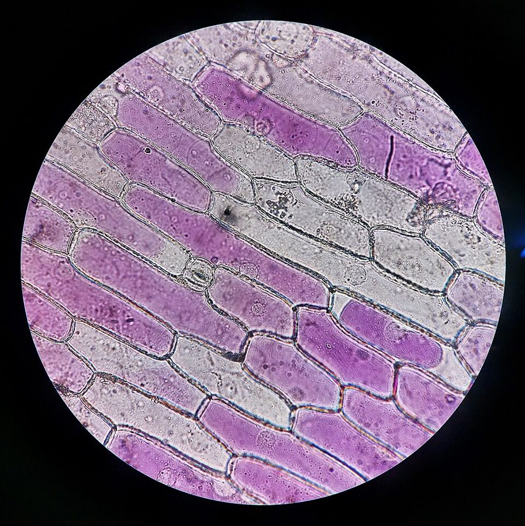
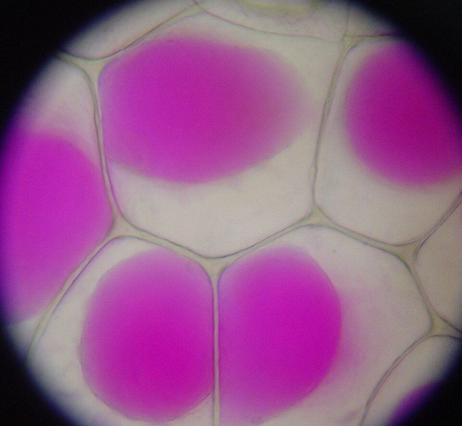
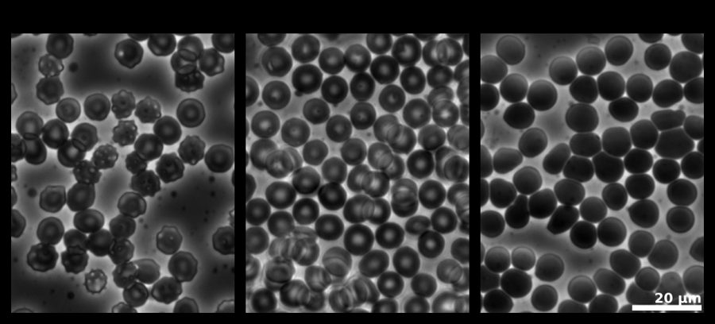
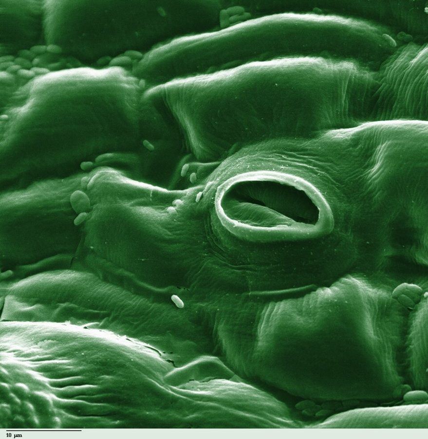

2.2 What Is Osmosis?
Name: ______________________ Class: ________ Date: ____________
📄 Download printable version (PDF)
Learning outcomes
- Define osmosis, investigate and describe the effects of osmosis on plant and animal tissues.
- Discuss the factors that affect the rate of osmosis.
Osmosis
The cell membrane is a partially permeable membrane: it lets some substances through but not others. In Fig. 2.8, a partially permeable membrane separates the two arms of a U-tube. The membrane lets water molecules through, but not sucrose molecules. (Sucrose is cane sugar, the sugar you use at home.)
Fig. 2.8 — Experiment to show osmosis.
Compared with arm B, arm A has:
- more sucrose molecules per unit volume;
- fewer water molecules per unit volume.
After some time, the level in arm A rises and the level in arm B falls. Why?
- Sucrose molecules are too large to pass through the tiny pores of the membrane, so they cannot move from A to B.
- Water molecules move from B to A, because solution B has more water molecules per unit volume than solution A. (A dilute solution has more water molecules per unit volume than a concentrated solution.)
Water keeps moving until both arms have the same solute concentration (the same number of solute molecules per unit volume).
The diffusion of water molecules across a partially permeable membrane is called osmosis.
Link to Chemistry
The concentration of a solution is the amount of solute dissolved in a unit volume of the solution.
Example 2: osmosis in a U-tube
The two arms hold sucrose solutions. The green dashed line at the bottom is a partially permeable membrane. Choose the concentrations, press Start and watch the water levels.
Only water molecules can pass through the membrane. Sucrose molecules are too large to pass through.
sucrose molecule water molecule
Press Start.
Practical: demonstrating osmosis
Aim: to show osmosis using dialysis tubing (Visking tubing), which is a partially permeable membrane.
Procedure
- Tie a knot in one end of a piece of dialysis tubing.
- Fill a boiling tube halfway with distilled water.
- Use a pipette to fill the dialysis tubing halfway with sucrose solution. If any spills, rinse the outside of the tubing with distilled water.
- Set up the apparatus as in Fig. 2.9. The liquid levels inside and outside the tubing must be the same. Hold the tubing in place with a paper clip and mark the level on the outside of the boiling tube.
- Set up a second boiling tube in the same way, but with distilled water both inside the tubing and in the boiling tube.
- After 20 minutes, observe the liquid levels inside and outside the tubing in each set-up.
At the start
After 20 minutes
Fig. 2.9 — Set-up to demonstrate osmosis.
Observation and discussion
- What do you notice about the dialysis tubing after 20 minutes? Explain your observation.
Show answer
The tubing swells and becomes firm, and the liquid level inside it rises. The distilled water outside has a higher water potential than the sucrose solution inside. Water molecules move into the tubing by osmosis, through the partially permeable tubing. Sucrose molecules are too large to move out. - What is the purpose of the second set-up (distilled water inside and outside)?
Show answer
It is a control. With no difference in water potential, the level does not change. This shows that the rise in the first set-up is caused by the sucrose solution (the water potential gradient), not by the tubing itself.
Example 3: Visking tubing becomes turgid or flaccid
The Visking tubing holds a sucrose solution. Choose what the tubing stands in, then press Start.
Only water molecules can pass through the tubing. Sucrose molecules are too large to pass through.
sucrose molecule water molecule
Press Start.
What is water potential?
When we talk about osmosis we use the term water potential. Water potential is a measure of how likely water molecules are to move from one place to another.
- Water molecules tend to move from a dilute solution (less solute) to a more concentrated solution.
- So a dilute solution has a higher water potential than a concentrated solution. Pure (distilled) water has the highest water potential of all.
- When a partially permeable membrane separates two solutions with different water potentials, a water potential gradient is set up. Water molecules move from the region of higher water potential to the region of lower water potential: down the water potential gradient.
Fig. 2.10 — A water potential gradient across a partially permeable membrane.
Fig. 2.11 — Water moves from a dilute solution (higher water potential) to a concentrated solution (lower water potential).
Osmosis is the net movement of water molecules from a region of higher water potential to a region of lower water potential, through a partially permeable membrane.
Common mistakes: in osmosis it is the water that moves, not the solute. More solute means lower water potential. Always mention the partially permeable membrane in your answer.
Video: Osmosis (YouTube: Cognito)
This video talks about “water concentration”. In our course we say water potential: a higher water concentration means a higher water potential.
What happens to plant cells in different solutions?
The cell sap in the vacuole of a plant cell is a solution. Whether water goes in or out depends on the water potential of the solution outside the cell.
| Plant cell in a solution of higher water potential (e.g. distilled water) | Plant cell in a solution of lower water potential (e.g. concentrated sugar solution) | |
|---|---|---|
| Water potential of cell sap compared with the solution outside | Lower than the solution outside. | Higher than the solution outside. |
| Movement of water by osmosis | Water molecules enter the cell through the partially permeable cell membrane. | Water molecules leave the vacuole and cytoplasm through the partially permeable cell membrane. |
| What happens to the cell | The vacuole gets bigger and pushes the cytoplasm against the cell wall. The cell does not burst, because the strong, inelastic cell wall protects it. The pressure of the water in the vacuole is the turgor pressure. | The vacuole gets smaller. The cytoplasm shrinks and the cell membrane pulls away from the cell wall. This is called plasmolysis; the cell is plasmolysed. |
| Result | The cell swells and becomes turgid (its firmness is called turgor). | The cell shrinks and becomes flaccid (limp). |
Blue arrows: the direction water moves by osmosis. Cell drawings not to scale.
A plasmolysed cell can recover. If it is put back into water (or a solution of higher water potential) soon enough, water enters by osmosis and the cell becomes turgid again.


Images: Trương Minh Khải, CC BY 4.0; Mnolf, CC BY-SA 3.0; via Wikimedia Commons.
_cells.jpg){kind=link}

Label a plasmolysed plant cell. Drag each label into a box (or tap a label, then tap a box).
↔ Swipe sideways to see the whole diagram.
A plasmolysed plant cell.
What happens to animal cells in different solutions?
| Animal cell in a solution of higher water potential | Animal cell in a solution of lower water potential | |
|---|---|---|
| Water potential of cytoplasm compared with the solution outside | Lower than the solution outside. | Higher than the solution outside. |
| Movement of water by osmosis | Water molecules move into the cell. | Water molecules move out of the cell. |
| What happens to the cell | The cell swells and may burst. Unlike a plant cell, it has no cell wall to protect it. →→ normal → swells → bursts | The cell shrinks and spikes appear on its surface. This is called crenation. The cell becomes dehydrated and will die if it stays there. → normal → crenated (shrunken, with spikes) |
In a solution with the same water potential as its cytoplasm, a cell does not change size or shape. Water molecules move in and out at the same rate, so there is no net movement of water. This is why medical drips and eye drops are made with the same water potential as body fluids.

Image: Zephyris, CC BY-SA 3.0, via Wikimedia Commons.

Try it: what happens to the cell?
Choose what happens in each case.
Why is turgor important to plants?
Support. Turgor keeps soft plant parts firm. Young stems and the leaves of non-woody plants stay firm and upright because of the turgor pressure in their cells. If the cells lose too much water, they lose turgor, become flaccid, and the plant wilts.
Fig. 2.12 — Turgor pressure keeps a young plant upright; losing turgor makes it wilt.
Movement. Changes in turgor make some plant parts move. For example, a stoma (a tiny pore in a leaf) opens and closes when its two guard cells gain or lose turgor.

Image: Photohound, public domain, via Wikimedia Commons.

Too much fertiliser. Plasmolysed cells die if they stay plasmolysed for too long. If too much fertiliser is added around a plant, the soil solution (the thin layer of water around soil particles, with dissolved mineral salts) becomes very concentrated. Its water potential becomes lower than that of the root cells, so water moves out of the roots by osmosis. The roots cannot absorb water while the leaves keep losing water by evaporation, so the plant wilts and will die unless the soil solution is diluted with water.
Factors that affect the rate of osmosis
Osmosis is the diffusion of water, so it is affected by the same kinds of factors as diffusion:
- Water potential gradient: the bigger the difference in water potential across the membrane, the faster the rate of osmosis.
- Distance: the shorter the distance the water molecules must travel, the faster the rate.
- Surface area to volume ratio: the larger the SA : V of the cell or tissue, the faster water moves in or out.
Practical: effect of osmosis on plant tissue
- Cut potato strips of the same size (for example 5 cm long), without skin. Measure the length (or mass) of each strip.
- Put one strip into each of: distilled water, a dilute sucrose solution and a concentrated sucrose solution.
- After 30 minutes, take the strips out, blot them dry and measure them again. Feel how firm or soft they are.
Results: in distilled water the strip gets longer and firm (water enters the cells by osmosis; the cells become turgid). In the concentrated solution it gets shorter and soft (water leaves the cells by osmosis; the cells become flaccid or plasmolysed). Work out the percentage change so strips of different starting sizes can be compared.
percentage change = (final length − starting length) ÷ starting length × 100%
A. A potato strip was 5.0 cm long. After 30 minutes in a concentrated sucrose solution it was 4.6 cm long. Work out the percentage change in length (use a minus sign for a decrease).
Check your understanding
1. Which is the correct definition of osmosis?
2. Which solution has the highest water potential?
3. In the U-tube experiment (Fig. 2.8), why does the level in arm A rise?
4. A plant cell is placed in distilled water. Why does it not burst?
5. What is plasmolysis?
6. Red blood cells are put into a concentrated salt solution. What will happen?
7. A farmer adds far too much fertiliser to the soil. Why might the crop wilt?
8. In the dialysis tubing practical, why is a second set-up with distilled water inside and outside the tubing used?